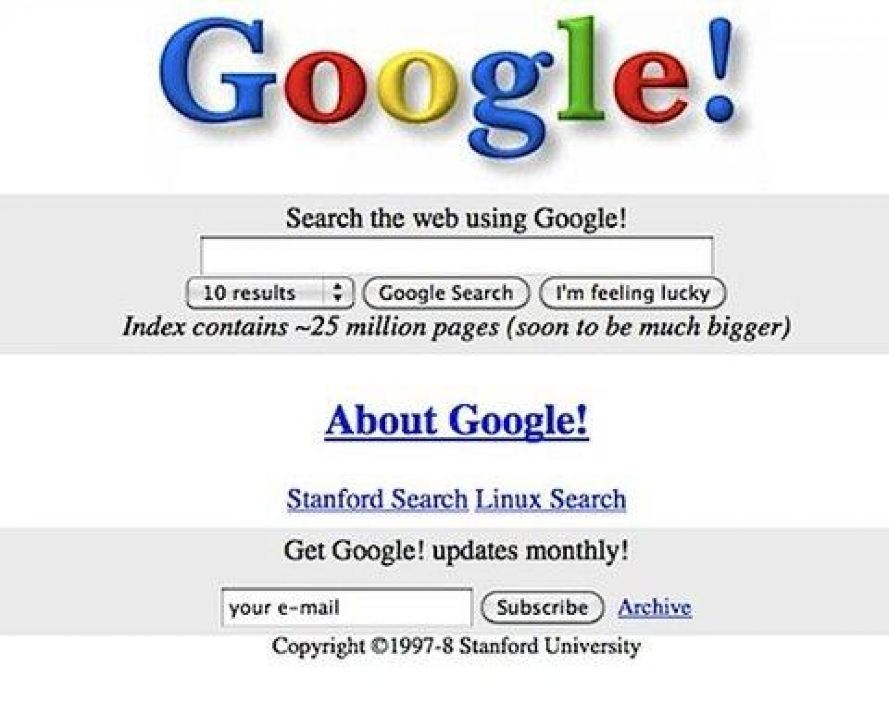
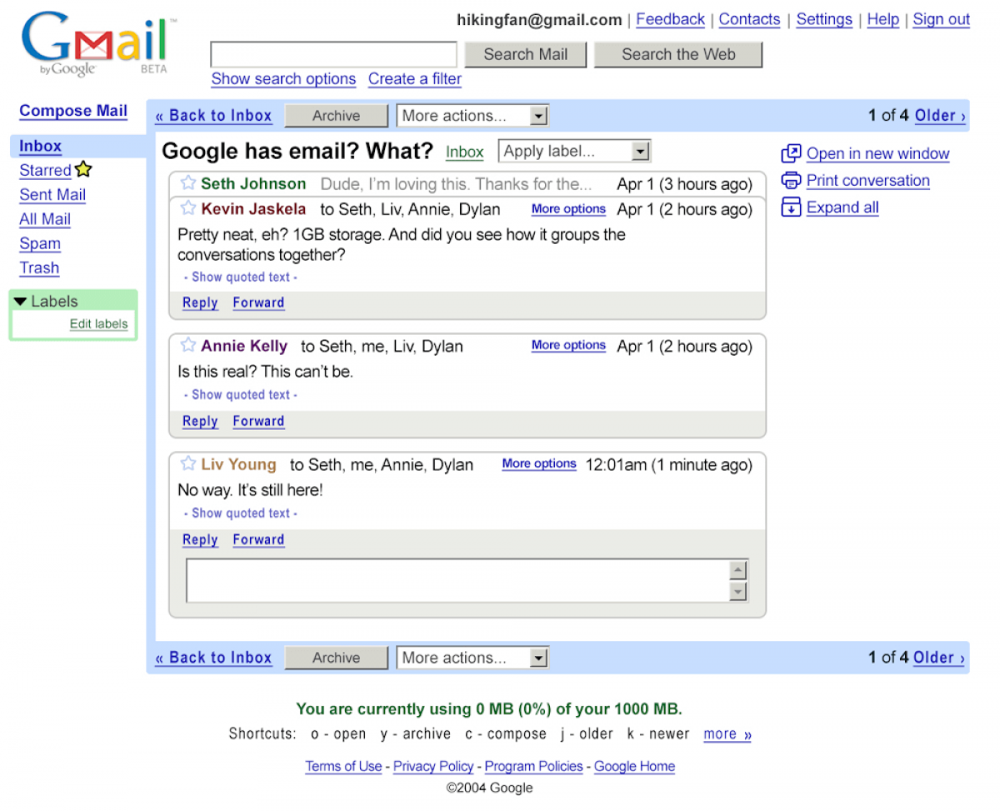
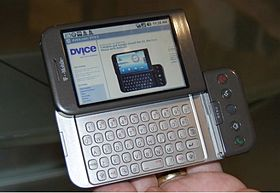
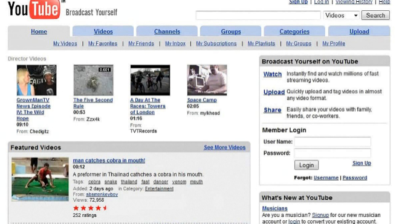
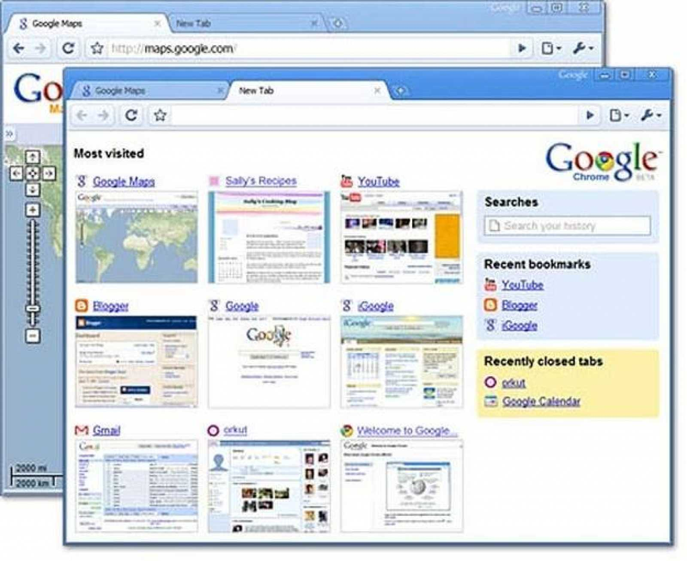
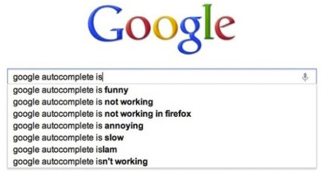

llega el primer Doodle de Google. Los Doodles son variaciones del logo de Google que el buscador muestra en las fechas de aniversarios muy notorios. Estas imágenes suelen ser interactivas y generan mucho interés en la red. El Doodle que el portal desarrolló para conmemorar la invención de la guitarra Gibson Les Paul supuso un récord de visitas. El primer Doodle data de 1999. Era un monigote dibujado detrás de una de las dos oes del logo de Google. Se diseñó para conmemorar la celebración del Festival del Hombre Ardiente, en Nevada. En el año 2000 vio la luz el segundo de los Doodles, éste para conmemorar la Toma de la Bastilla.)
llega Gmail, el correo de Google. El 15 de abril de 2004 Google lanza la versión de prueba de su servicio de correo electrónico, Gmail. Poco a poco se van añadiendo otras funciones como Google Talk, Google Docs (que ahora se llama Google Drive) o Google Calendar. Ocho años después, a finales de 2012, un estudio de la consultara ComScore constata que Gmail es el servidor de correo electrónico más usado del mundo con 282 millones de usuarios, por delante de otros como Hotmail, Outlook o Yahoo! Mail.)
Google compra Android… Android es un sistema operativo para ‘smartphones’. Google lo compra en 2005, aunque tarda unos años en salir al mercado. El primer teléfono Android fue el HTC Dream, que se puso a la venta en octubre de 2008. Esto supone el inicio de la competencia con otros dispositivos como iPhone o Blacberry.
YouTube es una plataforma ‘online’ de vídeos. La gente puede subir sus grabaciones y al mismo tiempo ver las de usuarios de todo el mundo. Fue creada por un grupo de tres particulares en 2005, y en 2006 Google la compra. Desde entonces el portal ha pasado de ser una pequeña página de vídeos a convertirse en una plataforma de alcance global. A través de YouTube se han retransmitido en directo eventos como el discurso de investidura de presidente de EE UU Barack Obama. También conciertos de bandas tan importantes como U2.
llega Google Chrome. De buscador a navegador. En septiembre de 2008 Google lanza Google Chrome, un navegador. Presenta un diseño limpio y sencillo y funciona con mucha rapidez. Pronto se convierte en el competidor de grandes navegadores como Internet Explorer, Mozilla Firefoz o Safari. Chrome gana popularidad poco a poco y se convierte en el navegador más usado de todo el mundo. Según la web de tecnología Mashable, en agosto de 2013 el 43% de los usuarios de todo el mundo lo usan para navegar por Internet.
Google estrena la función ‘autocompletado’… Escribe lo que quieres encontrar y haz clic en ‘buscar’. Este ha sido siempre el funcionamiento básico de Google, pero en 2011 esto cambió. Añadió la función ‘autocompletar’, que te sugiere posibles búsquedas a medida que estás escribiendo en la caja de texto. El buscador sigue varios criterios a la hora de proponerte cadenas de palabras, como por ejemplo tu historial o las búsquedas más populares.
